RMI介绍
RMI 全称 Remote Method Invocation（远程方法调用），即在一个 JVM 中 Java 程序调用在另一个远程 JVM 中运行的 Java 程序，这个远程 JVM 既可以在同一台实体机上，也可以在不同的实体机上，两者之间通过网络进行通信。
RMI 依赖的通信协议为 JRMP(Java Remote Message Protocol，Java 远程消息交换协议)，该协议为 Java 定制，要求服务端与客户端都为 Java 编写。
- 这个协议就像 HTTP 协议一样，规定了客户端和服务端通信要满足的规范。
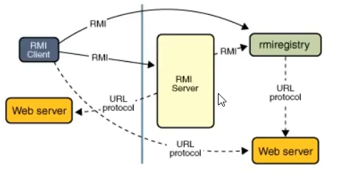
Server ———— 服务端：服务端通过绑定远程对象，这个对象可以封装很多网络操作，也就是 Socket
Client ———— 客户端：客户端调用服务端的方法 因为有了 C/S 的交互，而且 Socket 是对应端口的，这个端口是动态的，所以这里引进了第三个 RMI 的部分 ———— Registry 部分。
- Registry ———— 注册端；提供服务注册与服务获取。即 Server 端向 Registry 注册服务，比如地址、端口等一些信息，Client 端从 Registry 获取远程对象的一些信息，如地址、端口等，然后进行远程调用。
RMI的实现
服务器端
- 首先要有一个远程接口
public interface Remote {
}- 之后再写一个更具体的接口实现Remote，定义一个sayhello抽象方法
import java.rmi.RemoteException;
public interface RemoteObj extends Remote, java.rmi.Remote {
public String sayHello(String keywords) throws RemoteException;
}此远程接口要求作用域为 public；
继承 Remote 接口；
让其中的接口方法抛出异常
3. 定义该接口的实现类 Impl
import java.rmi.RemoteException;
import java.rmi.server.UnicastRemoteObject;
public class RemoteObjImpl extends UnicastRemoteObject implements RemoteObj {
public RemoteObjImpl() throws RemoteException {
// UnicastRemoteObject.exportObject(this, 0); // 如果不能继承 UnicastRemoteObject 就需要手工导出
}
@Override
public String sayHello(String keywords) throws RemoteException {
String upKeywords = keywords.toUpperCase();
System.out.println(upKeywords);
return upKeywords;
}
}- 实现远程接口
- 继承 UnicastRemoteObject 类，用于生成 Stub（存根）和 Skeleton（骨架）。
- 构造函数需要抛出一个RemoteException错误
- 实现类中使用的对象必须都可序列化，即都继承
java.io.Serializable
- 注册远程对象
import java.rmi.registry.LocateRegistry;
import java.rmi.registry.Registry;
public class RMIServer {
public static void main(String[] args) {
try {
RemoteObj remoteObj = new RemoteObjImpl();
Registry registry = LocateRegistry.createRegistry(1099);
registry.bind("remoteObj", remoteObj);
System.out.println("RMI Server started on port 1099...");
System.out.println("Waiting for client requests...");
// 保持服务运行
Thread.currentThread().join();
} catch (Exception e) {
System.err.println("Server error: " + e.getMessage());
e.printStackTrace();
}
}
}- port 默认是 1099，不写会自动补上，其他端口必须写
- bind 的绑定这里，只要和客户端去查找的 registry 一致即可。 这样服务端就完成了
客户端
客户端只需从从注册器中获取远程对象，然后调用方法即可。当然客户端还需要一个远程对象的接口，不然不知道获取回来的对象是什么类型的。
为了保证服务端与客户端创建的RemoteObj实例是同一个，Clilent和Server写在同一个项目里 RMIClient:
import java.rmi.registry.LocateRegistry;
import java.rmi.registry.Registry;
public class RMIClient {
public static void main(String[] args) {
try {
Registry registry = LocateRegistry.getRegistry("127.0.0.1", 1099);
RemoteObj remoteObj = (RemoteObj) registry.lookup("remoteObj");
String result = remoteObj.sayHello("hello");
System.out.println("Result from server: " + result);
} catch (Exception e) {
System.err.println("Client error: " + e.getMessage());
e.printStackTrace();
}
}
}分析RMI通信
数据与注册中心（1099端口）建立通讯
- 客户端查询需要调用的函数的远程引用，注册中心返回远程引用和提供该服务的服务端 IP 与端口。
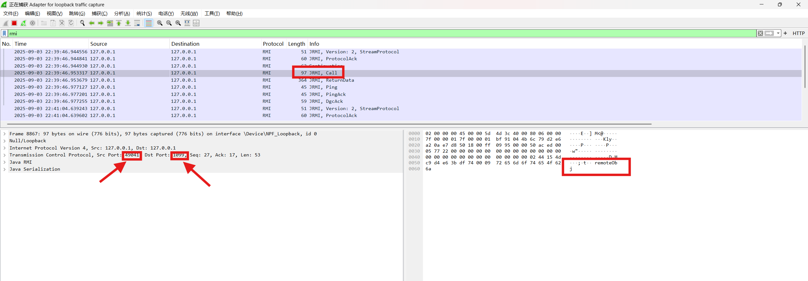
数据端与注册中心（1099 端口）建立通讯完成后，RMI Server 向远端发送了⼀个 “Call” 消息，远端回复了⼀个 “ReturnData” 消息，然后 RMI Server 端新建了⼀个 TCP 连接，连到远端的 33769 端⼝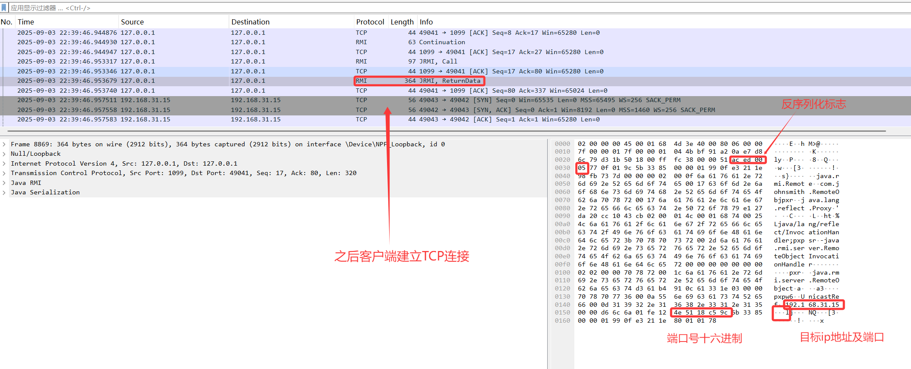
AC ED 00 05是常见的 Java 反序列化 16 进制特征
注意以上两个关键步骤都是使用序列化语句
客户端新起一个端口与服务端建立TCP连接
客户端发送远程引用给服务端，服务端返回唯一标识符确认函数可以被调用
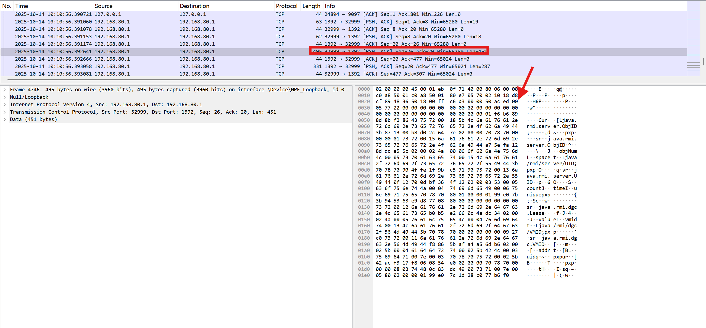
同样使用序列化传输 以上两步对应下边两行代码Registry registry = LocateRegistry.getRegistry("127.0.0.1", 1099);
RemoteObj remoteObj = (RemoteObj) registry.lookup("remoteObj");客户端序列化传输调用函数的输入参数至服务端
这一步服务端将序列化之后的结果返回客户端
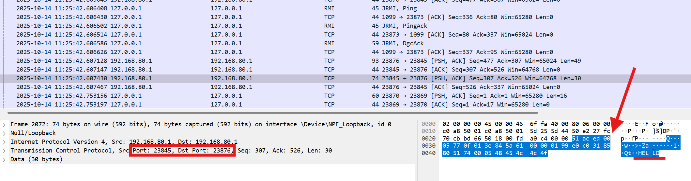
以上通讯过程对应的代码是：remoteObj.sayHello("hello");可以看出所有的数据流都是使用序列化传输的，那必然在客户端和服务带都存在反序列化的语句。
总结RMI工作原理
实际建⽴了两次 TCP 连接，第一次是去连 1099 端口的；第二次是由服务端发送给客户端的。
在第一次连接当中，是客户端连 Registry 的，在其中寻找 Name 为 hello 的对象，这个对应数据流中的 Call 消息；然后 Registry 返回⼀个序列化的数据，这个就是找到的 Name=Hello 的对象，这个对应数据流中的ReturnData消息。
到了第二次连接，服务端发送给客户端 Call 的消息。客户端反序列化该对象，发现该对象是⼀个远程对象，地址在 172.17.88.209:24429，于是再与这个地址建⽴ TCP 连接；在这个新的连接中，才执⾏真正远程⽅法调⽤，也就是 sayHello()
RMI Registry 就像⼀个⽹关，他⾃⼰是不会执⾏远程⽅法的，但 RMI Server 可以在上⾯注册⼀个 Name 到对象的绑定关系；RMI Client 通过 Name 向 RMI Registry 查询，得到这个绑定关系，然后再连接 RMI Server；最后，远程⽅法实际上在 RMI Server 上调⽤。
原理图：
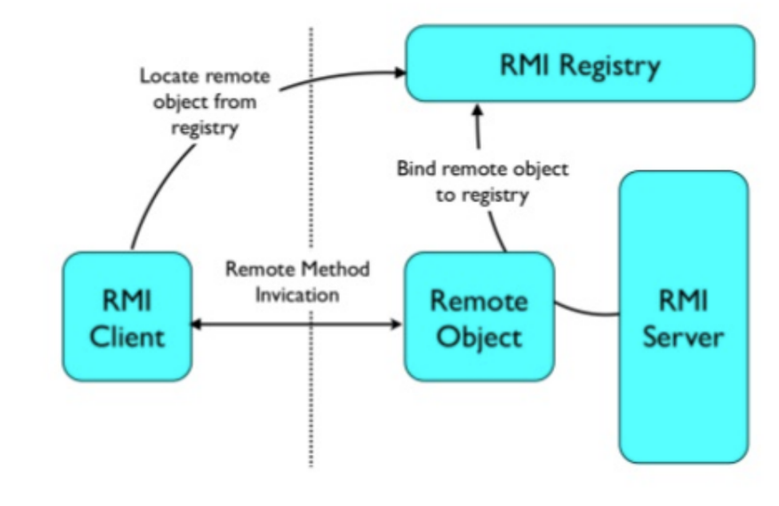
从IDEA断点分析RMI通信原理
流程分析总览
首先 RMI 有三部分：
- RMI Registry
- RMI Server
- RMI Client
如果两两通信就是 3+2+1 = 6 个交互流程，还有三个创建的过程，一共是九个过程。
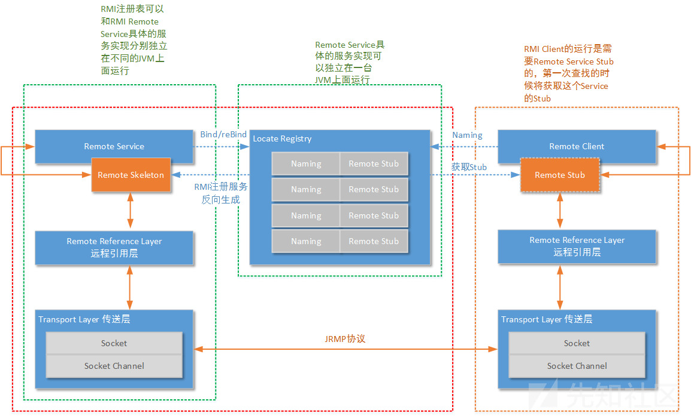
创建远程对象
说明：创建远程对象这一步不存在漏洞
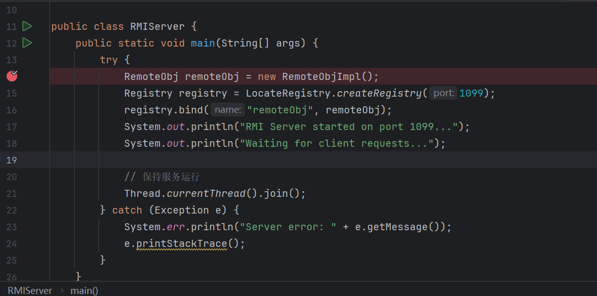
发布远程对象
开始调试，首先是远程对象的构造函数RemoteObjImpl，现在要分析RemoteObjImpl是怎么被发布到网络上的 RemoteObjImpl继承自UnicastRemoteObject类，所以先到父类的构造函数，这里port传入0表示一个随机端口
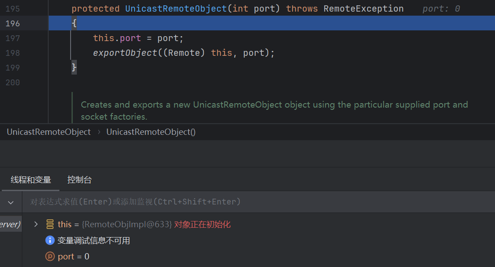
这个过程不同于Registry的1099端口，它是远程服务的
继续往下跟进，进入exportObject静态方法分析，它就是主要负责将远程服务发布到网络上，exportObject()的作用如下： RemoteImpl:
public RemoteObjImpl() throws RemoteException {
// UnicastRemoteObject.exportObject(this, 0); // 如果不能继承 UnicastRemoteObject 就需要手工导出
}如果不能继承UnicastRemoteObject类，就要手动调用exportObject()函数
接下来分析一下exportObject()这个函数：
public static Remote exportObject(Remote obj, int port)
throws RemoteException
{
return exportObject(obj, new UnicastServerRef(port));
}这个函数返回的参数里第一个参数是Remote对象obj，第二个是new UnicastServerRef(port)，接下来跟进UnicastServerRef的构造函数，发现有new LiveRef()的操作，LiveRef它算是一个网络引用的类(由于反编译的原因以下的var1都为端口port)
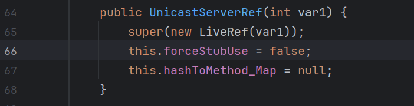
继续跟进LiveRef()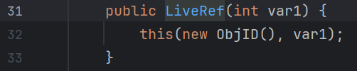
跳进this之后LiveRef如下：public LiveRef(ObjID objID, int port) {
this(objID, TCPEndpoint.getLocalEndpoint(port), true);
}第一个参数是objID，第三个参数是true，跟进 第二个参数 TCPEndpoint是rmi的一个内部类，负责网络请求,下面是其构造函数
public TCPEndpoint(String host, int port) {
this(host, port, (RMIClientSocketFactory)null, (RMIServerSocketFactory)null);
}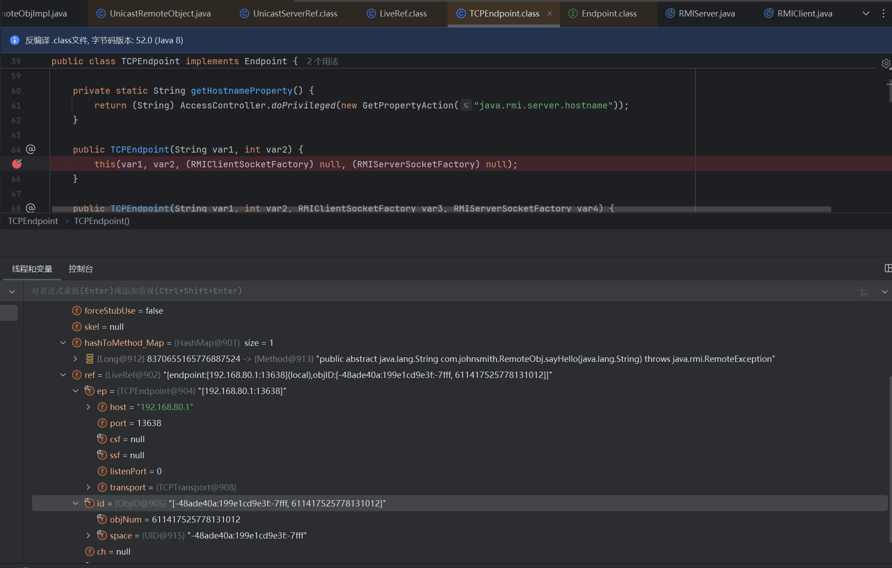
在此处打断点，发现此时endpoint已经绑定了host和port，而endpoint又被封装进了LiveRef里，因此数据在LIverRef里面。 上述是 LiveRef 创建的过程，然后我们再回到之前出现 LiveRef(port) 的地方一路步入，来到exportObject(),接下来的操作都与exportObject()有关，接着步入直到出现stub为止
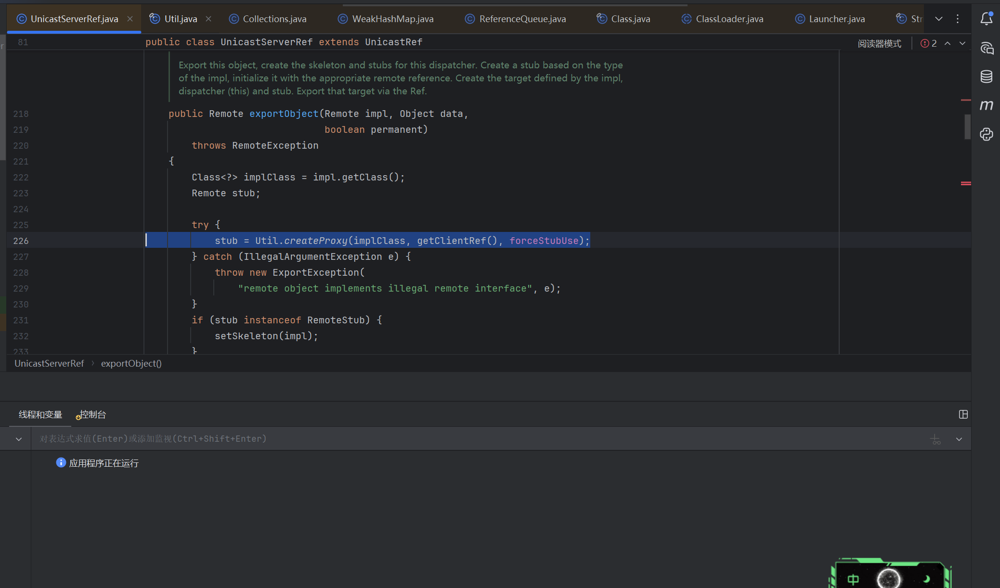
这里在我们服务端创建远程服务这一步居然出现了 stub 的创建，其实原理是这个样子的，来结合这张图一起说： RMI 先在 Service 的地方，也就是服务端创建一个 Stub，再把 Stub 传到 RMI Registry 中，最后让 RMI Client 去获取 Stub。 接着我们研究 Stub 产生的这一步，先进到 createProxy 这个方法里面 先进行了基本的赋值，然后我们继续 f8 往下看，去到判断的地方。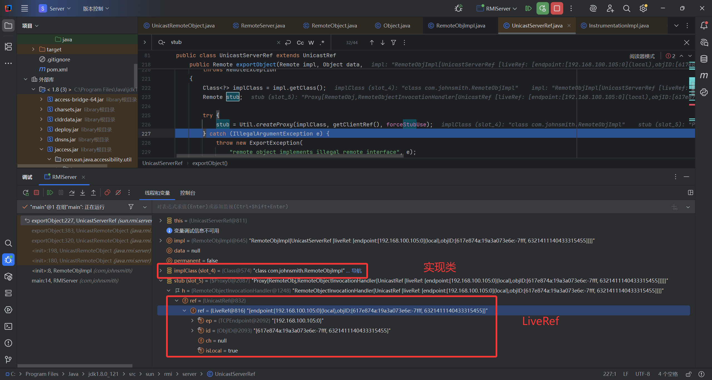
再往下可以看到类加载的地方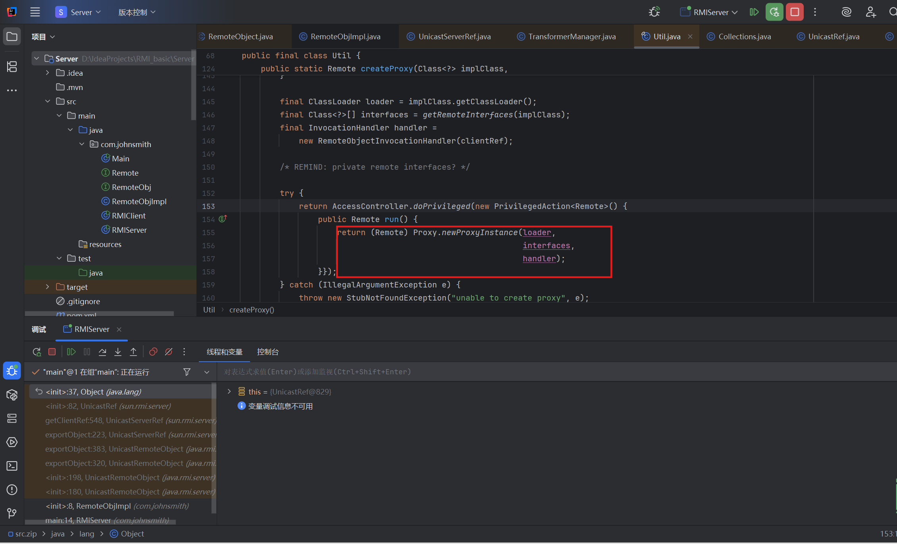
第一个参数是appclassloader，第二个是远程接口，第三个是调用处理器。调用处理器里只有一个ref